As the sun ducks below the vast horizon that is this year’s fantasy draft, managers of Meaux Burreaux steady their bows and brace for the long arduous season forthcoming. A new dawn patiently awaits on the opposing side of this nightfall. Behold what trials and tribulations await our intrepid managers.
The Heroes, The Gods
Immortals are never alien to one another.
There are teams that act as mere bystanders, and then there are those that bend Destiny, herself. These are the ones that can deftly traverse the high seas and bring it home.
Noah - Odysseus, Hero of the Trojan War
“There is no greater fame for a man than that which he wins with his footwork or the skill of his hands.”
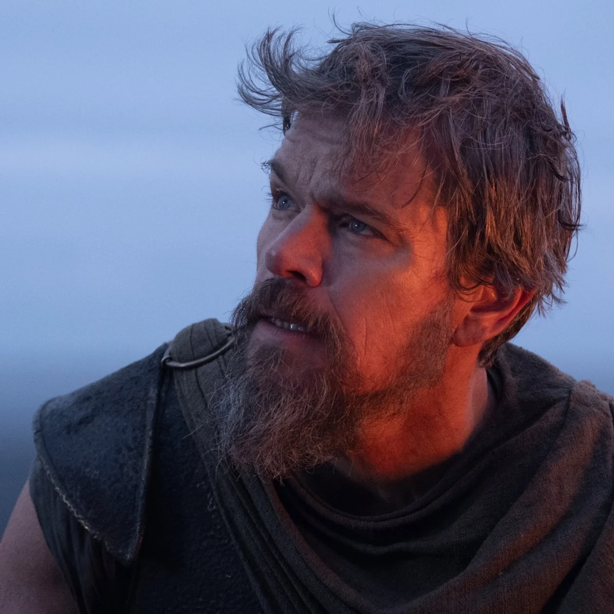
There can be no doubt that Noah, prepped with a battle-tested crew of hardy veterans, aims to return a king. But navigating this serpentine season will not come without its fair share of trials, and triumph will require the gift of gods. To steady the ship, Noah has wisely entrusted Josh Allen and Derrick Henry—fleet as Artemis’s arrow, sturdy as Hephaestus’s hammer—with captaining an offense through turbulence. Despite struggles with football retention at the beginning of last season (read: he fumbled a lot), King Henry quietly pulled together a dominant second half—displaying no indication of a slowdown. On the other hand, Allen, The Winter Soldier, is a consistent presence, despite offloading a lot of his touchdown rushing duties to James Cook, his second in command. Nevertheless, should they falter, Devon Achane may just outrun Zeus’s lightning, while Tetairoa McMillan, the NFL’s reigning offensive rookie of the year, is primed to secure endzone packages as though they were delivered by Hermes, himself.
Weakness: Depth. This is a unit designed to weather the football ocean’s greatest challenges, yet should his crew diminish in size, Noah could find himself in a world of hurt.
Peggy - Poseidon, The King of the Sea
“There will be killing ‘til the score is paid.”
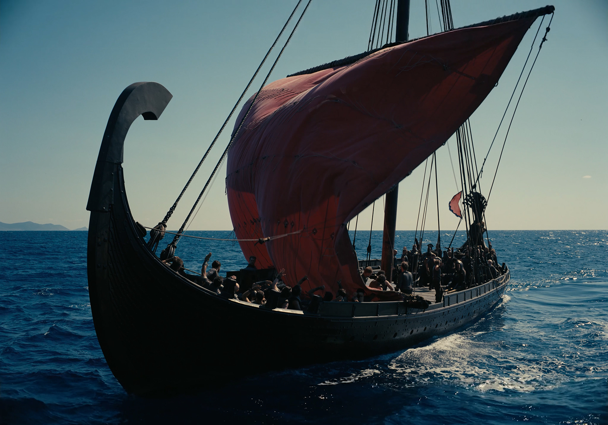
Peggy must have moved oceans to manifest this roster because she is blessed with a bounty of options. The fifth-year manager splashed early with a high bid on Ja’Marr Chase, and the rest of her picks flowed from there. James Cook will seek to be that ever roiling tide crashing into the endzone again this year, and Tyler Warren will likely continue to make waves after a stellar rookie campaign on a rolling Indianapolis offense that no one seemed to notice. Suffice it to say: this team is deep. From the crest to the seafloor, Peggy has numbers, and we suspect she’ll push her advantage with no mercy. The reunification of Mike Evans and Chris Godwin, if nothing else, ushers in good vibes, but could, perhaps, also represent a return to form for both grizzled vets. And Justin Herbert will act as the steady current through all of it. Frothy. Choppy. Turbulent. We suspect just about every manager will be lost at sea when they come up against her.
Weakness: Running back. David Montgomery is a questionable RB2, especially on this Texans offense, but one could certainly do worse.
Dongbo - Helios, The Sun God
“The blade itself incites to deeds of violence.”
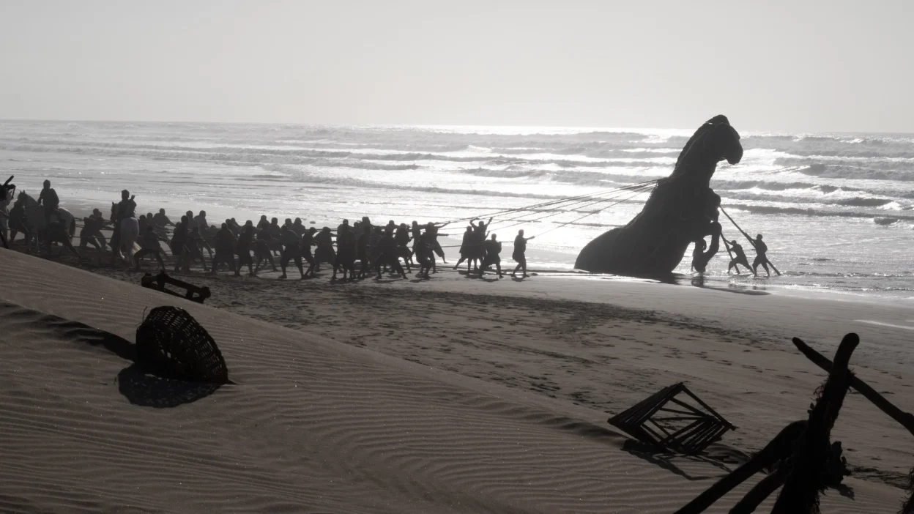
A passerby would be forgiven for underestimating this team’s capacity for wrath. Christian McCaffrey, entering his tenth season healthier than he’s been in a long time, shines like a white-hot star. And Drake London, coming off a career year that was hampered by injury, sits atop the draft board of receivers not named Ja’Marr Chase. Meanwhile, Cam Skattebo looks ready to rip right through the space-time continuum after a radiant debut, and Brock Bowers is want to build on his breakout rookie campaign from two years ago. One thing you might notice about this squad: a lot of players returning from injury. Another thing you might notice: not a whole lot going on on the bench. That being said, the top of this lineup can singlehandedly dismantle entire battalions, so Dongbo’s typical hands-off approach might be more of a boon than anything. Will this flaming ball of straight gas burn to a fizzle or scorch the league? That is the question facing Dongbo.
Weakness: Flex. Wandale Robinson will do in a pinch, but the bench is a barren wasteland.
The Monsters
Be strong, saith my heart; I am a soldier; I have seen worse sights than this.
Some may toy with the Fates, others simply want to crush everything in their path. These are the teams who do not care a whit for the hero’s journey—only the chaos they are apt to sow.
Goutham - Charbydis, The Whirlpool
“Three times a day she vomits it up, three times she gulps it down, that terror! Don’t be there when the whirlpool swallows down–not even the earthquake god could save you from disaster.”
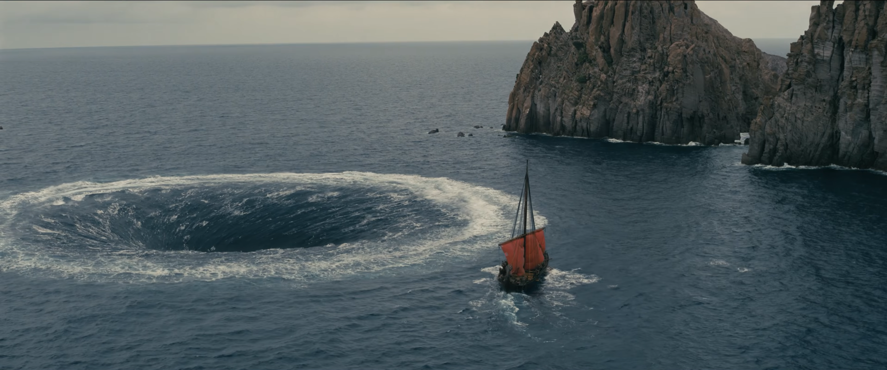
This swirling, whirling, reeling, rolling, dizzying, discombobulating force is certain to cause tumult in the Meaux Burreax landscape. Look no further than the two receivers Goutham is sporting: championship-winning Jaxon Smith-Njigba and lawsuit-pending Puka Nacua. Smith-Njigba led the league last season in total yards, while Nacua, despite missing a game, led the league in targets. And there’s no reason why these two shouldn’t continue to dance all over the competition—here’s hoping they keep the touchdown celebrations appropriate. But if that’s not enough to sell you, we raise you Lamar Jackson at quarterback. Last year, whether due to injury or simply a poor offensive game plan, Jackson wrangled with an ostensible regression of his on-field output. This year, the two-time MVP will likely have something to say about that, and if he can harness anywhere close to that 2024 level of play, Goutham will be in business. Nobody is sailing by this team without getting dragged into the mud, so strap in and paddle hard.
Weakness: Running back. Lots of great RB2 options, not so many premiere choices.
David - Scylla, The Sea Monster
“She has twelve feet in all, all dangling down, and six necks, wondrously long, and on each a hideous head, and therein three rows of teeth, set thick and close, menacing dark death.”
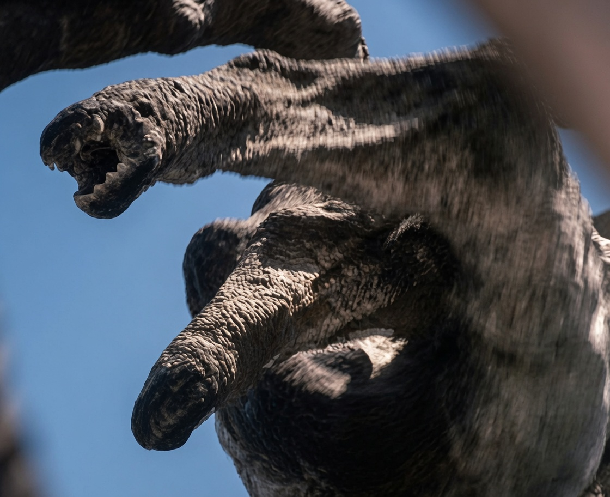
David’s reckless group of devilish deviants, both on and off the field, coalesces into one deadly multi-headed beast. Even if you manage to evade the snapping jaws of Trey McBride one week, the striking blow of Kyren Williams or the screaming energy of George Pickens are there to pierce your heart and snatch you away instead. Perhaps your best bet is the likes of Rashee Rice, Quinshon Judkins, and Josh Jacobs never rearing their ugly heads at all. Realistically, though, they’ll run you over just the same. And with the dual-pronged quarterback threat of Matthew Stafford and Jayden Daniels, David has a litany of options to slice and dice his opponents on any given week. No single player on this team is guaranteed to kill you, but you’re not getting through all of them without taking some casualties of your own.
Weakness: The criminal justice system. It’s tough to stay on the field when you’re behind bars.
Michael - Polyphemus, The Cyclops
“My name is Nobody.”
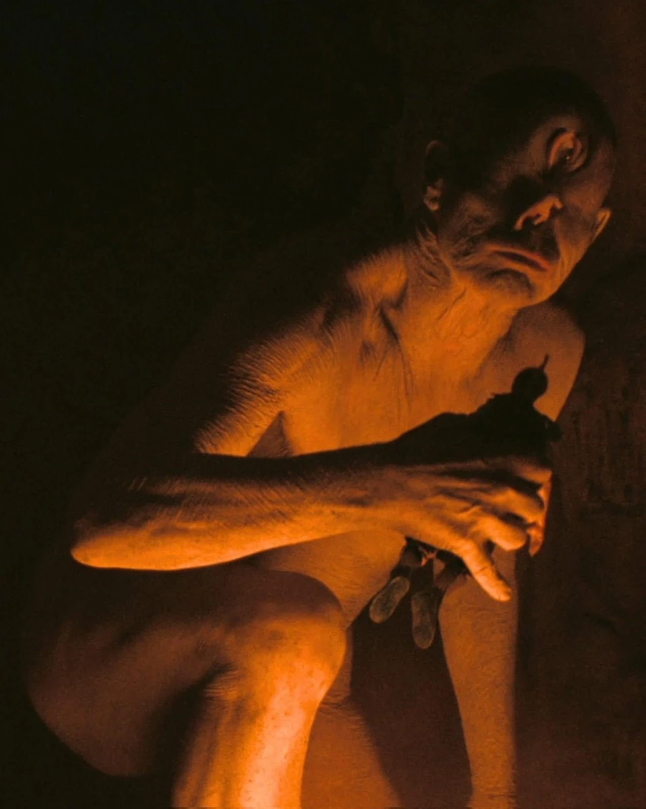
What you cannot say is that Michael doesn’t have vision. Single-focused as it may be, there is a vision for this team—and gosh darn if it isn’t deadly. Early into the draft, Michael found himself blinded by pure lust for eye-popping receivers, paying little regard to balancing his team with even a scintilla of a run game. The short-sighted maneuvering means he’ll lean on Caleb Williams to shepherd CeeDee Lamb and company through the deep, dark cave of which he’s made home. But all is not lost. Amon-Ra St. Brown, the Sun God, and Malik Nabers, the Giant, are a deadly secondary receiving duo, while Luther Burden is a luxury on the bench. And, for what it’s worth, Kenneth Gainwell and Jordan Mason are at least plausible starting options. He’ll certainly want to keep an eye open to quality running backs on the waivers, but this team isn’t all roar. It can squash you and swallow you whole if you don’t tread lightly.
Weakness: Running backs. We all know it. But also: Michael’s bottomless greed.
The Temptations
It is the wine that leads me on, the wild wine that sets the wisest man to sing at the top of his lungs, laugh like a fool—it drives the man to dancing... it even tempts him to blurt out stories better never told.
Not keen on destruction, some are inclined toward a softer touch. These teams may not win glory, but they sure can win your heart.
Wenlong - Circe, The Witch
“Scepticism is as much the result of knowledge, as knowledge is of scepticism.”
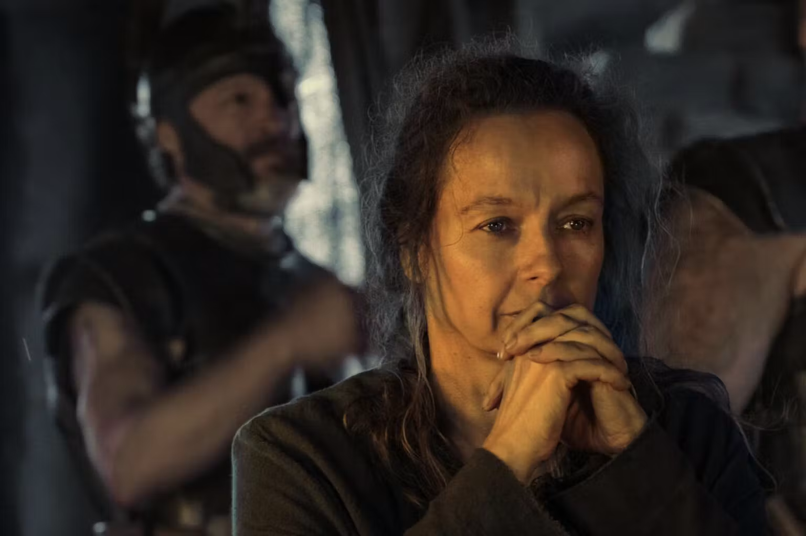
Something is just off with this team. You might not think much at first glance. Omarion Hampton returning from a promising, though injury-shortened, rookie season and Jonathan Taylor coming off an amazing bounceback year? Davante Adams leading the league in touchdowns in his thirty-third trip around the sun and esteemed tush-pusher, Jalen Hurts, with a new playcaller? Your eyes are liable to grow bigger than your stomach. The surface looks bright, but it conceals a carnival of bad options just below. Parker Washington, Isaiah Likely, and Jadarian Price are being tasked with some heavy lifting, despite very few receipts to prove their value. And the bench leaves even less to be desired. Yes, we’ll concede it’s possible that these warriors are made for this moment, but it seems just as likely that this pig sty will stink up the whole place.
Weakness: Flex. So what happens when Zach Charbonnet comes back? A few games of rookie Jadarian Price to start the season seems like a raw deal.
Yiding - Calypso, The Nymph
“Even his griefs are a joy long after to one that remembers all that he wrought and endured.”
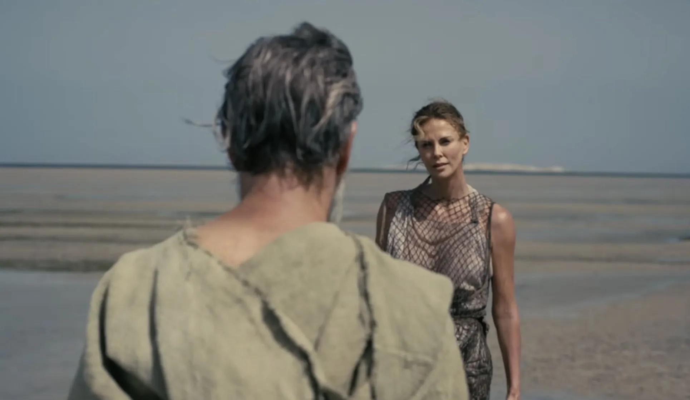
Yiding has been wandering the wilderness ever since his miraculous championship run. It’s a purgatory of his own making, and this year looks to be no different. He’ll certainly demand your attention with his running back room, filled with studs like Jahmyr Gibbs and Javonte Williams. However, both players are coming off career years with even higher expectations, and we suspect an ebb in their tides could be coming. On the flip side, Yiding’s wide receivers, Devonta Smith and Ladd McConkey have real potential to make a leap, but ultimately, there’s just not enough firepower to make it off this island. Aaron Jones, Travis Kelce. These are names of ancient heroes. But they are not the warriors of today. Best to drink the lotus flower now and forget this season.
Weakness: Quarterback. Bo Nix is a fine quarterback, but he isn’t the fantasy champion of which this team is in dire need.
Theo - Siren, The Temptress on the Rocks
“But sing no more this bitter tale that wears my heart away.”
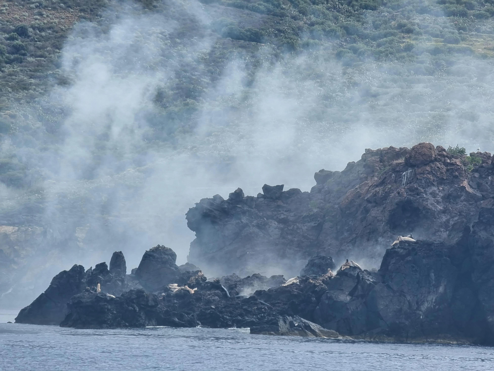
Theo found himself once again unable to resist the urge of drafting Garrett Wilson. Perhaps that sweet song was too overwhelming because what followed was a slew of Jets and Texans, at least one of which was not worth the pick at any price. Breece Hall and Chase Brown will act as anchors in the run game, but the rest of the roster looks rocky, to say the least. Nico Collins, as talented as he is, has had no help in recent years from either his quarterback or his offensive line (much like Wilson). The team Theo assembled, it turns out, is something of a mirage. Alvin Kamara, Darren Waller, and Brian Thomas Jr. beg to be remembered for their better years, and Xavier Worthy suggests a potential he’ll never actually reach. This hapless chorus of players might churn out a tantalizing tune, but in sink-or-swim situations, it’s fated to drown.
Weakness: Aaron Glenn. There’s a lot riding on this Jets offense and not a lot of good of which to speak.
The Suitors
Of all creatures that breathe and move upon the earth, nothing is bred that is weaker than man.
Somebody get these beggars out of here. These are the teams sure to spit all over Zeus’s Law and overstay their welcome when the season gets long in the tooth.
Tom - Peisander, The Forgettable
“Out of sight, out of mind.”
Now here’s a squad that has all the trappings of a championship-aspiring team without any of the substance. Saquon Barkley and Justin Jefferson would have dominated the tables in 2024, but that was then. Today, this team really looks like a pile of has-beens mixed with a dash of wannabes. With the likes of Kyle Pitts, Emeka Egbuka, and Dezhaun Stribling, we’re not saying this team has no capacity to impress, but we are saying a lot will have to go right. Stefon Diggs and Rome Odunze sit as intriguing bench options, but at the end of the day, the weapons Tom really needs are locked up on other people’s rosters.
Weakness: Running back. Travis Etienne is a dubious RB2. Tank Bigsby is an even more dubious RB3.
Vinny - Polybus, The Unfortunate
“Empty words are evil.”
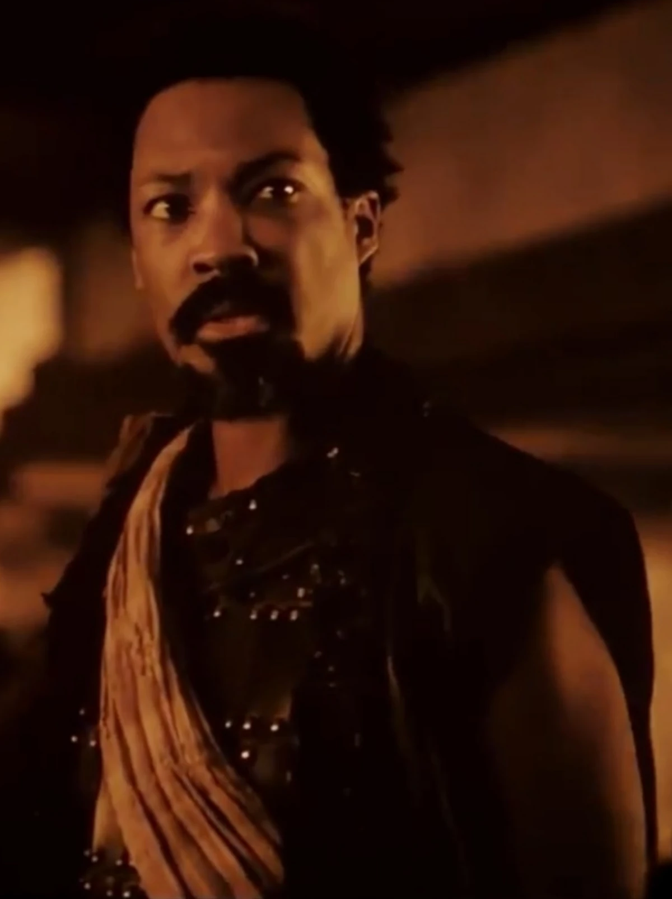
If you come for the king, you best not miss. What can we say? Vinny drafted a run team with swagger—the type of swagger that comes with the second best running back in the Meaux Burreaux draft (Bijan Robinson), the third overall pick in the NFL draft (Jerimiyah Love), and the sixth overall in last year’s draft (Ashton Jeanty). But there are no fantasy points for swagger. And what we see instead is a pretender. Tre Tucker lacks the capability to carry the flame for this Raiders air offense, and Chris Olave isn’t well positioned to be a WR1. This team could kick a dying dog when it’s down, but it’s not destined to ascend to the apogee of strength and resplendence.
Weakness: Wide receivers. If Chris Olave is your top dog, you’re going to need more than Quentin Johnston to back him up.
Sam - Antinous, The Wretch
“Men are so quick to blame the gods: they say that we devise their misery. But they themselves--in their depravity--design grief greater than the griefs that fate assigns.”
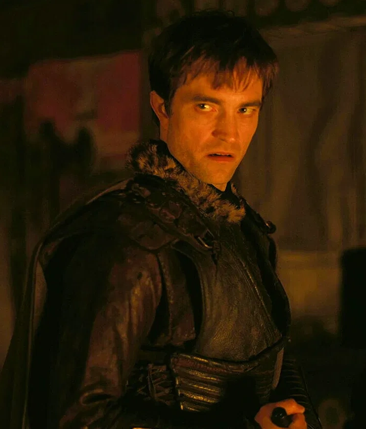
Not long ago was a time wherein Sam was the favored of football soothsayers. But today he stands an eroded husk of what he once symbolized. Be it complacency, entitlement, or simply the sands of time, that patina of uncanny insight has all but washed away, and what is left is a man, standing at the foot of a palace, pleading to be recognized as king. Unfortunately, A.J. Brown (who averaged the same amount of yards per game as Alec Pierce last year), can and will not lead him to that promised land. Nor will Bhayshul Tuten, the sophomore who had a serviceable, though unnoteworthy, debut. Nor will Kenneth Walker, who leads the backfield of the weakest Chiefs offense in nearly a decade. Nor any of the myriad of beggars that line this roster. This is a team as uninspired as it is ill-conceived, and even a crafty man like Sam cannot save it.
Weakness: Wide receivers. A.J. Brown and Zay Flowers are not destined to be game winners in 2026.